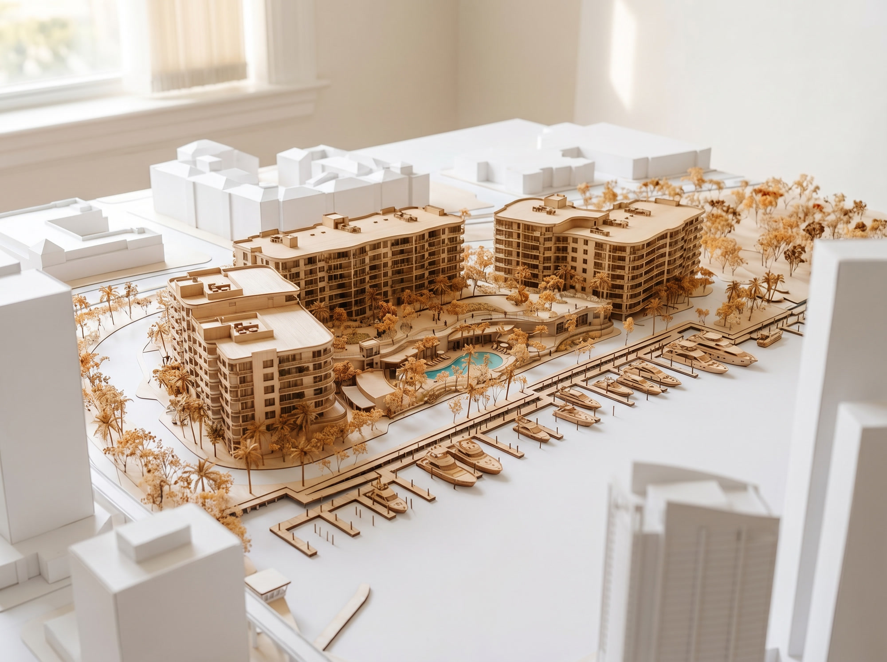
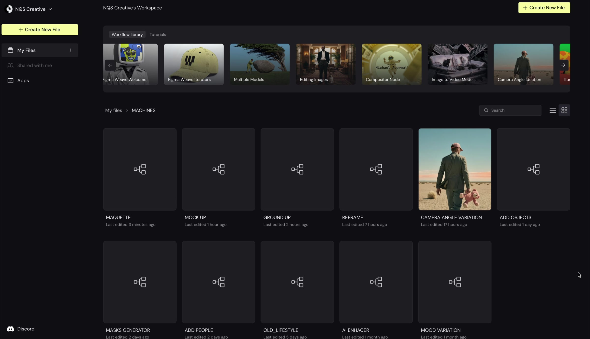
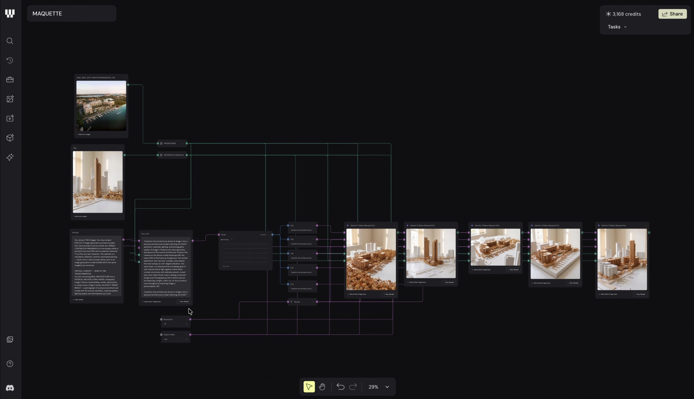
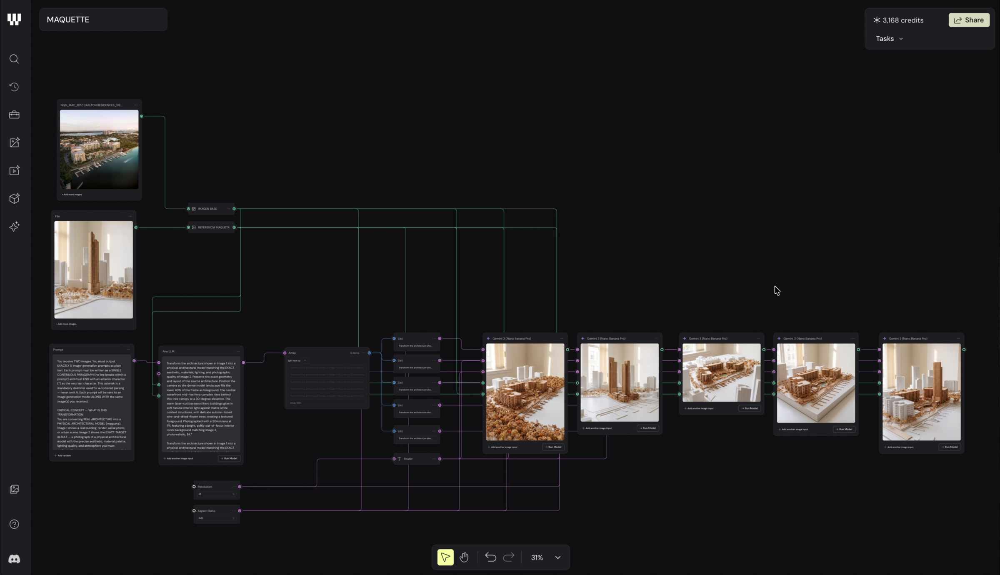
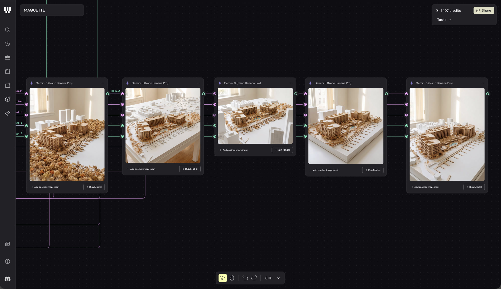

De render a maqueta arquitectónica en segundos. Maquette toma una imagen de arquitectura y la transforma en una maqueta física virtual — ese modelo de mesa que se usa en presentaciones, fotografiado sobre fondo blanco.
Maquette toma una imagen de arquitectura — render, aerial, foto — y la transforma en una maqueta física virtual: ese modelo de mesa que se usa en presentaciones de proyecto, fotografiado sobre fondo blanco.
El estilo lo controlás con una imagen de referencia. La máquina vive 100% en Weavy y genera 5 variaciones en paralelo.

Como en todas las herramientas: nunca se trabaja sobre la máquina original. Se copia al espacio del proyecto.



El System Prompt que viene con la máquina ya está armado para funcionar bien en la mayoría de los casos. Esto es una excepción — deberían ser pocos los proyectos que lo necesiten. Pero si querés algo muy específico que la imagen de referencia sola no logra, podés abrir un chat cualquiera en Claude (no hace falta ningún proyecto especial), pegarle el prompt y decirle: "Tengo este system prompt, necesito modificarlo para que cuando vea una imagen haga X". Ahí le das una vueltita de tuerca.
